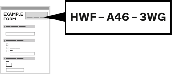

GOV.UK
ALPHA
Tell us what you
think and help us improve
Step 19 of
20
Your application for help with fees is not finished yet
Based on your answers you should be eligible for full help with your fee. The court or tribunal will complete your application and confirm if it’s successful.
Based on your answers you should be eligible for money off your fee. The court or tribunal will complete your application and confirm if it’s successful.
You must write this reference number
HWF-A46-3WG
on
the court or tribunal form you're completing for your case or claim.

Write the reference number in the ‘HWF reference’ field if there is one. If not, you should write it wherever there is space on
the court or tribunal form
You can also save or print this page and attach it to
the court or tribunal form
If you provided your email address, you'll get your application reference number by email. If you didn't provide an email, make a note of your reference number for your own records.
Save or print this page
Continue